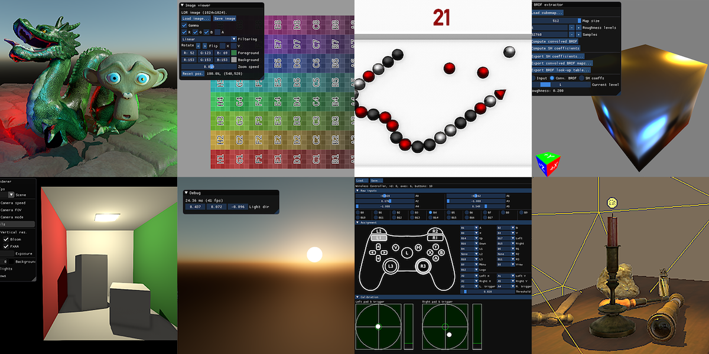

Example of included demos
Building
This project use premake (premake.github.io) for generating the workspace and projects files. Run
premake5.exe [vs2017 | xcode | make | ...]
To generate the desired workspace in the build directory.
The documentation (access it at docs/index.html) relies on Doxygen being installed. Generate it with
premake5 docs
You can clean the build directory with
premake5 clean
Two non-system dependencies are required by this framework: glfw3 and nfd, binaries for both are provided for macOS and Windows. All other dependencies are compiled along with the projects.
Features
- Theoretical introduction
- Technical introduction
- General setup (glm, glew, glfw)
- Main loop
- Interactions
- Programs and shaders compilation
- Errors and tips, debugging
- Rendering basic geometry
- Shaders and uniforms [Explanations stop here]
- Textures
- Vertex attributes
- Moving to 3D using matrix
- Camera
- Element arrays
- Meshes loading
- Lighting
- Complex uniforms
- Texture and Normal maps
- Effect maps (specular, AO)
- Cubemap : skybox
- Environment mapping: specular, irradiance map
- Gamma correction
- Simple framebuffer
- Shadow maps
- Antialiasing
- Distinct render and display resolutions
- Parallax mapping
- Variance shadow maps
- Deferred shading
- SSAO
- Resources managers
- Joystick support
- HDR, bloom
- Physically based rendering
- Spot lights and point lights shadow maps
- Atmospheric scattering
- Shader offline validation
- Basic game demo
- Irradiance precomputation utility
- CPU raycaster
Planned
Graphics techniques
- Raymarching techniques (SSR)
- Water/terrain/noise
- Temporal AA
- UI elements, text rendering (df)
- Particles, instanced drawing
- Geometry shaders/TFb
- Tessellation
Engineering
- Support PS4 controller fully
- Separate backgrounds and objects
- Realtime cubmaps for reflections, using culling instead of layered rendering
- Isolate OpenGL calls
- Imrpove resources handling
- Avoid binary dependencies